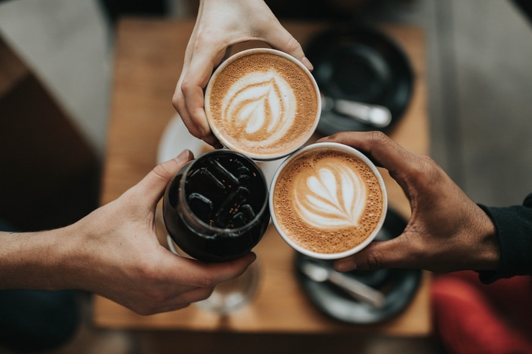

Tentang Kami
Markas Kitchen adalah tempat dimana terdapat Hidangan makanan dan hasil seduhan biji kopi yang telah disangrai dan dihaluskan menjadi bubuk. Kopi merupakan salah satu komoditas di dunia yang dibudidayakan lebih dari 50 negara. Dua varietas pohon kopi yang dikenal secara umum yaitu Kopi Robusta (Coffea canephora) dan Kopi Arabika (Coffea arabica).
Pemrosesan kopi sebelum dapat diminum melalui proses panjang yaitu dari pemanenan biji kopi yang telah matang baik dengan cara mesin maupun dengan tangan kemudian dilakukan pemrosesan biji kopi dan pengeringan sebelum menjadi kopi gelondong. Proses selanjutnya yaitu penyangraian dengan tingkat derajat yang bervariasi. Setelah penyangraian biji kopi digiling atau dihaluskan menjadi bubuk kopi sebelum kopi dapat diminum.
Sejarah mencatat bahwa penemuan kopi sebagai minuman berkhasiat dan berenergi pertama kali ditemukan oleh Bangsa Etiopia di benua Afrika sekitar 3000 tahun (1000 SM) yang lalu. Kopi kemudian terus berkembang hingga saat ini menjadi salah satu minuman paling populer di dunia yang dikonsumsi oleh berbagai kalangan masyarakat. Indonesia sendiri telah mampu memproduksi lebih dari 400 ribu ton kopi per tahunnya. Di samping rasa dan aromanya yang menarik, kopi juga dapat menurunkan risiko terkena penyakit kanker, diabetes, batu empedu, dan berbagai penyakit jantung (kardiovaskuler).